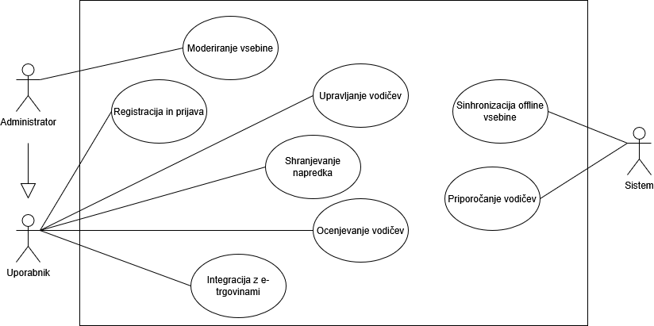

Funkcionalnosti strežnika aplikacije HandyDandy
1. Avtentikacija uporabnikov
- Uporabniki se lahko registrirajo in prijavijo v aplikacijo.
- Upravljanje uporabniških sej.
- Avtentikacija preko Firebase Authentication.
- REST API: POST /api/auth/register, POST /api/auth/login
- Vhod: JSON objekt z uporabniškimi podatki.
- Izhod: JWT žeton za avtentikacijo.
2. Upravljanje vsebine vodičev
- Dodajanje, urejanje, brisanje in iskanje video ter slikovnih vodičev.
- Vodiči se shranjujejo v Firebase Storage.
- REST API: GET /api/guides, POST /api/guides, DELETE /api/guides/:id
- Vhod: JSON objekt vodiča.
- Izhod: ID novega vodiča.
3. Shranjevanje napredka uporabnikov
- Uporabniki lahko spremljajo izvedena popravila in prejemajo značke.
- Podatki se shranjujejo v Firestore Database.
- REST API: POST /api/progress, GET /api/progress/:userId
- Vhod: JSON objekt napredka.
- Izhod: posodobljeni napredek uporabnika.
4. Sinhronizacija vsebin za offline dostop
- Vodiči se lahko prenesejo na napravo za uporabo brez internetne povezave.
- Sinhronizacija s Firebase Cloud Messaging.
- REST API: GET /api/guides/offline
5. Priporočilni sistem
- Algoritem predlaga vodiče glede na zgodovino popravil.
- REST API: GET /api/recommendations/:userId
6. Sistem ocen in komentarjev
- Uporabniki lahko ocenjujejo vodiče in dodajajo komentarje.
- REST API: POST /api/comments, GET /api/comments/:guideId
- Vhod: JSON objekt komentarja.
- Izhod: ID novega komentarja.
7. Integracija z e-trgovinami
- Priporočila za nakup orodij in materialov.
- REST API: GET /api/tools, GET /api/tools/:id
- Vhod: seznam potrebnih materialov.
- Izhod: priporočila za nakup.
UML Diagram primerov uporabe
Spodaj je prikazan UML diagram primerov uporabe, ki prikazuje interakcijo uporabnikov s strežnikom:
